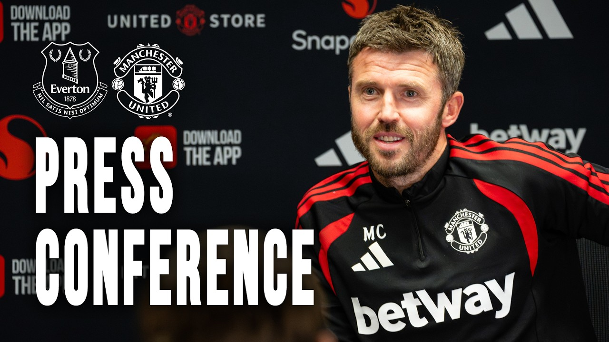

Mbeumo, Šeško, Rashford and Shaw gave United real threat.
The connections in forward areas looked encouraging, even if the result was not.
LIVE SOURCES CONNECTED
The important Manchester United stories, gathered across trusted newsrooms, club channels and video publishers—clearly sourced and easy to compare.
Top story 28m ago
THE DAILY BRIEFING
Monday, 7 September 2026
United twice had the lead at Everton and showed plenty going forward. A 96th-minute equaliser, however, left Michael Carrick with an early problem to solve.
The connections in forward areas looked encouraging, even if the result was not.
United now need to show they can manage difficult moments as well as create the exciting ones.
Champions League football begins this week, with little time to dwell on Everton.
NEW · WHO’S SAYING WHAT
Laurie Sutcliffe compares the competing verdicts on United’s transfer window, the rebuilt midfield and the positions left unresolved.
EVIDENCE PROJECT · NARRATIVE ANALYSIS
Explore 354 sourced questions, 422 preserved responses and the recurring narratives across Michael Carrick’s Manchester United press conferences.

Inside the press roomOfficial Manchester United conference footageTHE NEWS WIRE
Publisher feeds live · checked 1m ago
Latest · 1h ago
Youth & academy · 5h ago
Transfers · 5h ago
Latest · 6h ago
Videos · 6h ago
Latest · 6h ago
Videos · 7h ago
Videos · 7h ago
Videos · 8h ago
Videos · 8h ago
Videos · 9h ago
Interviews · 9h ago
Videos · 10h ago
Videos · 10h ago
Videos · 10h ago
Latest · 10h ago
Club · 10h ago
Latest · 10h ago
Club · 10h ago
Latest · 10h ago
Videos · 11h ago
Club · 11h ago
Interviews · 11h ago
Latest · 11h ago
Latest · 11h ago
Latest · 11h ago
Club · 11h ago
Videos · 11h ago
Videos · 12h ago
Club · 12h ago
Videos · 12h ago
Interviews · 12h ago
Videos · 12h ago
Transfers · 12h ago
Transfers · 12h ago
Latest · 12h ago
Latest · 12h ago
Latest · 12h ago
Videos · 12h ago
Videos · 12h ago
Latest · 12h ago
Videos · 13h ago
Videos · 13h ago
Videos · 13h ago
Transfers · 13h ago
Videos · 13h ago
Transfers · 13h ago
Videos · 13h ago
Videos · 13h ago
Videos · 13h ago
SQUAD WATCH
Verified club updates and attributed reports, kept together so supporters can see what is confirmed.
Club updatesContract reporting, transfer claims and official announcements—with the source always visible.
Latest reportsPost-match interviews, analysis and player talking points from across the United beat.
Fixtures & resultsTHE NEXT GENERATION
Under-21 and Under-18 fixtures, results, contracts, loans, call-ups and the young players pushing towards the first team.
Official Academy coverageUNITED ON SCREEN
OPEN & ATTRIBUTED
United Roundup monitors club channels, established newsrooms, dedicated journalists and fan-led video publishers. Headlines are surfaced for review, then readers are sent to the original publisher for the full story.
View the full monitored source directoryOpen each reporter’s latest Manchester United coverage.
Go directly to the outlet or its dedicated United coverage.
Fan video, interviews, match reaction and analysis—labelled separately from reported news.
THE UNITED ROUNDUP COMMUNITY
Match threads, transfer talk and daily story discussion—ready to connect to your own moderated Discord server.